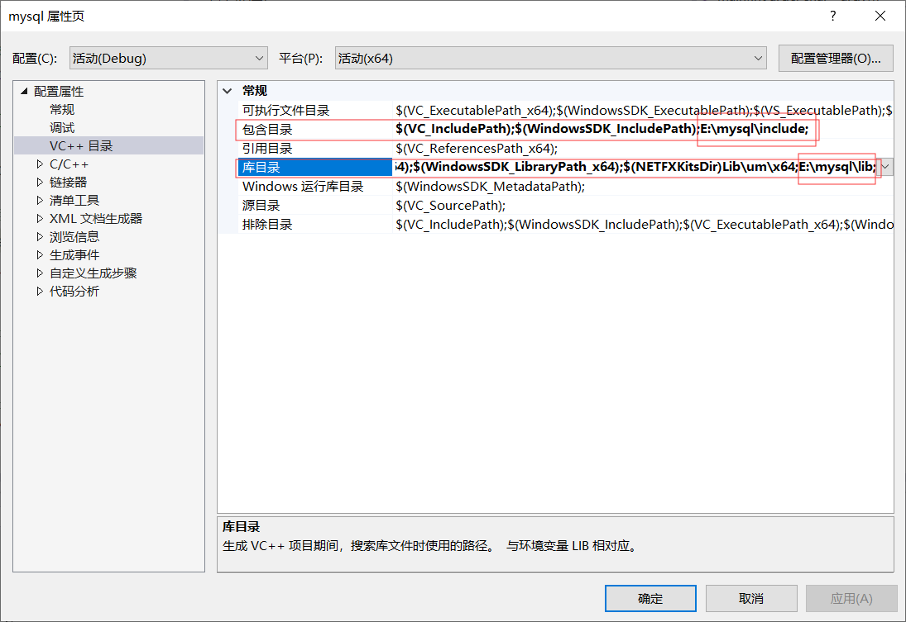
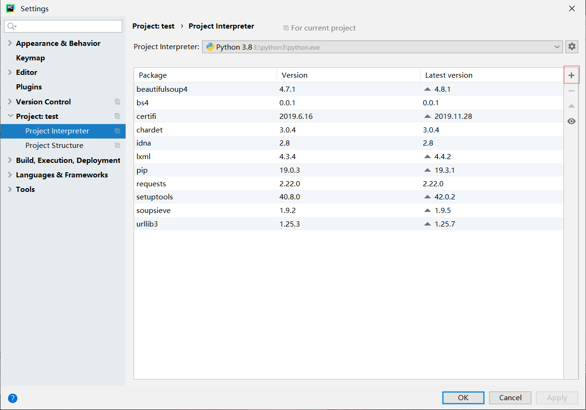
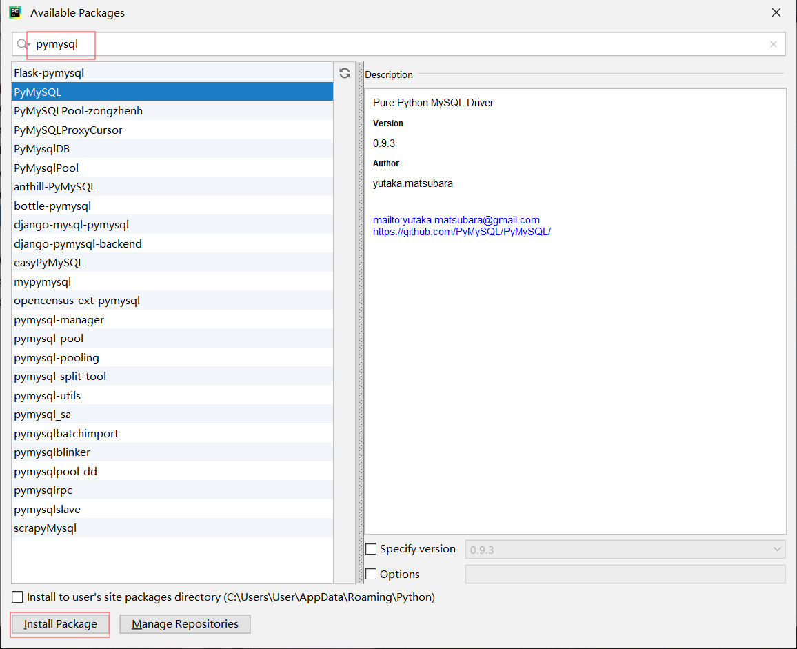

数据库（Database，DB）就是数据存放的地方，是需要长期存放在计算机内的有组织并且可共享的数据集合。这里所说的数据不仅包括普通意义上的数字，还包括文字、图像、音频、视频等，凡是在计算机中所用来描述事物的记录都可以称为数据。
数据库操作
1 | -- 当指定名称的数据库不存在的时候创建它，并且设置编码和排序规则 |
数据表操作
创建表
1 | -- 创建一张表，设置其中的字段信息(列名\类型) |
查看表
1 | -- 显示指定表的字段信息 |
修改表
1 | -- 在指定表的每一个位置添加一个字段 [FIRST \ AFTER column] |
删除表
1 | -- 删除表中的指定字段 |
插入表
1 | -- 为指定表的所有字段添加一条记录 |
更新表
1 | -- 设置所有的用于性别为女 |
删除字段
1 | -- 删除姓名为小红的字段 |
约束类型
1 | -- 表的约束类型 |
查询
1 | -- 简单的查询所有的数据 |
c连接数据库

如果找不到libmysql.dll，则需要将dll粘贴到项目根目录下
项目平台要与mysql版本对应
1 | // mysql.cpp : 此文件包含 "main" 函数。程序执行将在此处开始并结束。 |
python连接数据库
安装pymysql模块


1 | import pymysql |